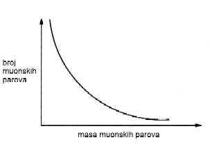
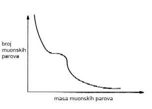

POVRATAK 'RADERFORDA'
Godine 1967, pomoæu novog zraka elektrona u SLAC-u preduzet je niz opita sa rasipanjem. Cilj: prouèiti strukturu protona malo prodornije, 'zaseæi' u protone. Visokoenergetski elektron uleti u metu koja se sastoji od vodonika; u njoj pogodi neki proton. Iziðe elektron mnogo niže energije, pod nekim velikim uglom u odnosu na putanju kojom se prvobitno kretao. One taèkaste strukture koje postoje u protonu poslužile su, dakle, u nekom smislu reèi, isto kao ¥to je služilo ono jezgro koje je Raderford gaðao alfa-èesticama. Isto, ali i ne ba¥ isto, jer je ovde posredi bilo i ne¥to istanèanije.
Ovaj stenfordski tim predvodila su trojica nauènika: SLAC-ov fizièar Rièard Tejlor (Richard Taylor), po nacionalnosti Kanaðanin, zatim Džerom Fridmen (Jerome Friedman) i Henri Kendal (Henry Kendall), obojica fizièari sa MIT-a. Njima su svojim teoretièarskim kibicovanjem ogromno pomogli Rièard Fajnmen i Džejms Bjorken. Fajnmen je unosio svoju energiju i ma¥tu u jaka meðudejstva, a naroèito u pitanje: "¥ta ima u protonu?" Fajnmen je ostao u Kalteku, u Pasadeni, ali je èesto dolazio u Stenford. Bjorken, koga svi zovu samo Bj, stenfordski je teoretièar. On se veoma zanimao za sam postupak vr¥enja opita, kao i za pravila koja se kriju ispod prividno 'nesazrelih' podataka. Ta pravila, smatrao je Bjork, trebalo bi da budu pokazatelj o osnovnim zakonima koji vladaju unutar 'crne kutijice' i koja kontroli¥u strukturu hadrona.
Ovde moramo da se vratimo na¥im dobrim starim prijateljima Demokritu i Ruðeru Bo¥koviæu zato ¥to su obojica u izvesnoj meri osvetlila ovu temu. Demokritov test da li ne¥to jeste a-tom ili nije sastoji se u tome da pitamo da li je to ne¥to nedeljivo. U kvarkovskom modelu, proton je lepljiva smesa tri kvarka koji se kreæu brzo. Po¥to su ti kvarkovi uvek nerazdvojno vezani izmeðu sebe, tokom opita èini se da je proton nedeljiv. Bo¥koviæ je, meðutim, dodao jo¥ jedan test. Elementarna èestica, dakle a-tom, mora biti nalik na taèku. Na ovom testu proton svakako pada. Pomenuta ekipa iz MIT-SLAC-a, uz pomoæ Fajnmena i Bja, shvatila je da operativno merilo ovde mora biti ono o taèkastosti, a ne o nedeljivosti. Ti ljudi su sada morali da prenesu svoje podatke u neki model koji bi sadržao taèkaste sastavne delove; ovo je zahtevalo istanèanost daleko veæu nego ¥to je Raderford u svom opitu postigao. Zato je bilo tako zgodno imati u timu dvojicu teoretièara koji su meðu najboljima na svetu. Ishod: podaci su nagovestili da unutar protona odista postoje taèkasti pokretni predmeti. Godine 1990. Tejlor, Fridmen i Kendal oti¥li su i uzeli svoju Nobelovu nagradu, dobijenu zato ¥to su ustanovili da kvarkovi stvarno postoje. (To su ona trojica nauènika koje pominje Džej Lino na poèetku ovog poglavlja.)
Jedno dobro pitanje: kako mogu ti drugari da vide kvarkove, kad kvarkovi nikad nisu slobodni? Pomislite na hermetièki zatvorenu kutijicu u kojoj su tri èeliène loptice. Protresate kutiju, naginjete je tamo i ovamo, oslu¥kujete, i zakljuèite: tri loptice. Kudikamo finija poenta sastoji se u tome ¥to kvarkove uvek može¥ otkriti samo u blizini drugih kvarkova, ¥to bi moglo izmeniti njihove odlike. Ne¥to se moralo uèiniti u vezi sa ovim èiniocem, ali... piano, piano.
Teorija kvarkova pridobijala je nove pristalice, naroèito meðu teoretièarima koji su gledali kako podaci poèinju da pridodaju kvarkovima sve pouzdaniju stvarnost, kako se pojavljuju nove odlike, kako se upravo ta nemoguænost da gledamo pojedinaène kvarkove pretvara u prednost. Najpopularnija reè postade 'konfajnment' (confinement) - zatoèenost, zatvorenost u ogranièeni prostor, spreèenost da se iz nekog mesta iziðe. Kvarkovi ostaju tu zatoèeni za sva vremena zato ¥to, kad poènu da se udaljuju jedan od drugog, energija potrebna za dalje poveæanje tih rastojanja postaje sve veæa i veæa. Ako ba¥ navalimo iz sve snage, dodata energija postane dovoljno velika za stvaranje para kvark-antikvark i, gle, sad odjednom imamo èetiri kvarka, a to znaèi dva mezona. To ti je kao da poku¥ava¥ odneti kuæi samo jedan kraj nekog kanapa. Uhvati¥ taj kraj, povuèe¥, preseèe¥ njegovu vezu sa drugim krajem i, uh... ¥ta se to desilo. Dobio si dva kanapa.
I¥èitavanje kvarkovske strukture na osnovu opita sa rasipanjem elektrona bilo je, u vrlo velikoj meri, monopol Zapadne obale SAD. Moram napomenuti, meðutim, da je i moja grupa u Brukhejvenu u to vreme prikupljala veoma sliène podatke. Èesto sam u ¥ali govorio: da je taj Bjorken radio na Istoènoj obali, ja bih otkrio kvarkove.
Kontrasti izmeðu opita u SLAC-u i Brukhejvenu pokazuju da postoji vi¥e od jednog naèina da se 'odere' kvark. U oba sluèaja gaðan je proton. Ali Tejlor, Fridmen i Kendal koristili su kao sonde elektrone, a mi - protone. Oni su u SLAC-u bacali elektrone u 'crnu kutijicu podruèja sudara' i merili one elektrone koji su iz toga izlazili. Izlazilo je i mnogo ¥to¥ta drugo - na primer, protoni i pioni - ali ovi drugari su to prenebregli. Mi smo u Brukhejvenu protonima gaðali komad urana (da bismo pogodili protone u njemu), a pažnju smo usredsredili na parove muona koji su izlazili; njih smo merili pomno. (Ponoviæu, za one meðu vama koji nisu pazili: elektroni i muoni su leptoni. Muon ima sve iste osobine kao elektron, sem ¥to je dvesta puta teži.)
Rekao sam ranije da je opit u SLAC-u bio slièan onom Raderfordovom opitu sa rasipanjem èestica, koji se zavr¥io tako ¥to je otkriveno postojanje atomskog jezgra. Ali Raderford je naprosto gaðao jezgro alfa-èesticama i merio pod kojim uglom one odskaèu. U SLAC-u je proces bio složeniji. Ako æemo govoriti jezikom teorije i koristiti mentalnu sliku koju nam nudi matematika, elektron koji se sjuruje ka maloj crnoj kutiji ¥alje ispred sebe, u nju, jedan foton. Taj foton je glasnik. Ako glasnik ima ba¥ one prave, potrebne osobine, može se desiti da ga jedan od kvarkova apsorbuje. Ako elektron izbaci iz sebe jedan uspe¥an foton-glasnik (takav koji bude u crnoj kutijici pojeden), posledica je to da se izmene i energija i kretanje tog elektrona. Sad elektron izlazi iz crne kutijice oslabljen, a nauènici ga izmere. Drugim reèima, energija izlazeæeg elektrona kaže nam ne¥to o baèenom i pojedenom fotonu-glasniku i, ¥to je jo¥ važnije, o onome ¥to je glasnika pojelo. Uoèeni obrazac fotona-glasnika mogao se tumaèiti samo na jedan naèin: naime, da ih je u protonu uvek apsorbovalo po jedno 'ne¥to' koje je taèkasto.
U dimuonskom opitu (tako je nazvan jer smo proizvodili po dva muona) u Brukhejvenu, ¥aljemo visokoenergetske protone u oblast crne kutijice. Energija tog protona dovodi do toga da iz mesta sudara bude izraèen jedan foton-glasnik koji krene napolje, da iziðe iz crne kutijice; ali pre nego ¥to to postigne, raspadne se na muon i odgovarajuæi antimuon. Te dve èestice izlete iz crne kutijice i budu izmerene. Ovo nam kaže ne¥to o odlikama fotona-glasnika, a to smo doznavali i u SLAC-ovom opitu. Meðutim, opit sa parom muona teorijski je shvaæen tek 1972. godine, a i posle toga bilo je potrebno jo¥ mnogo drugih, istanèanih dokaza da bi se najzad stiglo do taènog tumaèenja.
Ovo tumaèenje prvi su izložili Sidni Drel (Sidney Drell) i njegov student Tung Mo Jan (Tung Mo Yan) na Stenfordu; nimalo iznenaðujuæe, jer stenfordovcima su muoni u krvi. Njihov zakljuèak: na¥ foton-glasnik (onaj iz koga se raða muonski par) nastaje tako ¥to jedan od kvarkova u pristižuæem brzom protonu ostvari sudar sa jednim antikvarkom u pogoðenoj meti, pri èemu, dabome, taj kvark i taj antikvark moraju meðusobno da se anihiliraju. Ovo je ¥irom sveta poznato kao 'Drel-Janov opit' iako smo mi smislili i izveli ceo opit, a Drel i Jan 'samo' prona¥li pravo tumaèenje.
Kad je Rièard Fajnmen za moj dimuonski opit napisao, u jednoj svojoj knjizi, da je 'Drel-Janov opit' - ¥alio se èovek - ja sam telefonirao Drelu i rekao mu da pozove sve one graðane koji su kupili tu Fajnmenovu knjigu i da svakom ponaosob saop¥ti da treba precrtati imena Drel i Jan na strani 47 i iznad toga upisati ime Ledermen. (Nisam se usudio da dosaðujem Fajnmenu.) Drel je rado pristao i pravda je trijumfovala.
Od tih vremena do danas, opit Drela, Jana i Ledermena izveden je u svim laboratorijama i svuda je pružio dokaze - koji se meðusobno uklapaju i potvrðuju - o taènim naèinima na koje kvarkovi grade protone i mezone. Pa ipak, ovo nije navelo ba¥ sve fizièare da poveruju u postojanje kvarkova. Preostalo je ne¥to skepticizma. A mi smo sve to vreme imali u Brukhejvenu dokaz, dokaz koji je mogao sve skeptike da ubedi, a koji nam je naprosto bô oèi... ali nismo znali ¥ta on znaèi.
Izveli smo na¥ opit 1968. godine, i to je bio prvi opit te vrste na svetu. Osmatrali smo glatko poveæanje proizvodnje muonskih parova, koje je nastupalo uporedo sa poveæanjem mase upotrebljenih fotona-glasnika. Foton-glasnik može da ima prolaznu masu ma koje vrednosti, ali ¥to je ta vrednost veæa, to je kraæi vek tog fotona, a i teže ga je napraviti. Sad, Hajzenberg. Opet on. Pamtite, ¥to je veæa masa, to je manji deliæ prostora koji može biti istražen; po¥to je to tako, trebalo bi da vidimo, pri poveæavanju energije protona, sve manji broj dogaðaja sa porastom energije (sve manji broj muonskih parova, dakle). Uzmemo dobijene podatke i bacimo ih u koordinatni sistem. Dobijemo jedan grafikon, to jest jednu krivu. Položena osa, x-osa, služi za to da na njoj oznaèavamo sve veæe i veæe mase. Uspravna osa, y-osa, služi da naznaèimo koliko je muonskih parova proizvedeno. Trebalo bi da dobijemo krivu ovog oblika:

Oèekujemo, dakle, glatku silaznu liniju koja bi znaèila proizvodnju sve manjeg i manjeg broja muonskih parova kad se poveæava energija fotona koji bi hteo da izleti iz crne kutijice. Ali umesto toga, dobijemo ne¥to otprilike ovako:

Negde oko 3 GeV, dakle na tom nivou mase, glatko spu¥tanje niz krivu bilo je naru¥eno tako ¥to se pojavila jedna 'grbina' za koju se sad kaže da je Ledermenova grba. Takvo ispupèenje na grafikonu pokazuje da se desilo ne¥to neoèekivano, u ovom sluèaju neki dogaðaj koji ne može biti obja¥njen samo postojanjem fotona-glasnika. Oèigledno, jo¥ ne¥to je 'sedelo' na Drel-Janovim dogaðajima. Tad smo prvi put jasno i èisto proma¥ili ne¥to ¥to æemo tek kasnije otkriti i ¥to æe biti konaèni dokaz stvarnosti kvarkova.
To ¥to se grickamo ¥to nismo prvi otkrili taèkastu strukturu protona i ¥to su ¥vedskim dekretom dodeljene Nobelove nagrade Fridmenu, Kendalu i Tejloru ne znaèi da smo stvarno ljuti. Èak ni Bjorken, da je bio kod nas, možda ne bi mogao da prozre, godine 1968, sve fine veze izmeðu brukhejvenskih dimuona i kvarkova. Svejedno, dimuonski opit je, u retrospektivi sagledano, moj najomiljeniji. Tako originalna zamisao, tako ma¥tovita, tehnièki zaista detinjasto jednostavna za izvoðenje - toliko jednostavna da sam propustio da vidim otkriæe decenije, koje je bilo tu. Podaci su se nalazili na tri mesta: najpre je tu bio Drel-Janov dokaz o taèkastoj strukturi; drugo, dokaz da postoji koncept zvani 'boja' u apsolutnim iznosima (o tome æemo kasnije); a treæe je otkriæe J/Psi - džej-psi (odmah nailazi). Svaki pojedini od ta tri sastojka bio je nobelovskog kvaliteta. Da smo shvatili onako kako je trebalo da shvatimo, ¥vedska Kraljevska akademija mogla je da u¥tedi sebi bar dve nagrade!
|